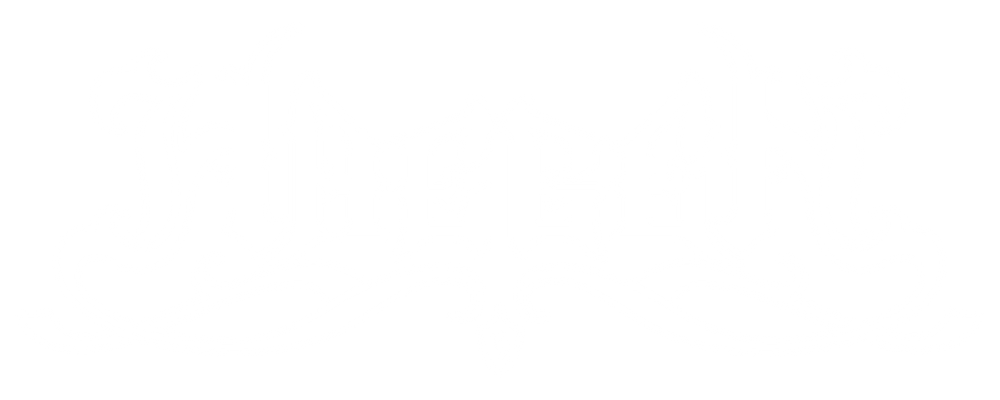

Folk Metal band from Marche, ItalyWHAT DEFINES US
Haegen was born in 2012 with a single purpose: to forge the raw fury of heavy metal together with the ancient voices of the Marche's traditional music.
Soon the music became more than sound. It became a way to tell the stories, legends and customs of our land, keeping alive what the centuries have tried to bury.
But this land is not only epic. It is laughter around the table, wine shared with strangers, a people who never take themselves too seriously. That spirit lives on our stage, where solemn melodies meet irreverent tales, often born from our own misadventures and turned into songs no one sees coming.
Haegen wants to be a bridge between the history of this ancient land and those ready to rediscover it: forgotten places, half-remembered legends, and the timeless voice of the hills between the mountains and the sea.
OUR STORY
Haegen is a folk metal band formed in 2012 in Osimo (Ancona, central Italy). The original line-up featured Samuele Secchiaroli (guitar, backing vocals), Leonardo Lasca (vocals), Tommaso Sacco (drums), Eugenio Cammoranesi (keyboards, backing vocals) and Nicola Scalzotto (bass, backing vocals).
After their first self-titled demo, the band welcomed Federico Padovano on flute and backing vocals in 2014, and together they recorded the EP Tales from Nowhere, released in 2015.
That same year, Nicholas Gubinelli joined as the new bassist, and in 2017 the band released their first full-length album, Immortal Lands, through Hellbones Records.
Haegen quickly established themselves as one of Italy's most authentic and passionate folk metal bands. Their music, which summons the ancient legends and wild nature of the Marche region, has captivated audiences at some of the country's most prestigious festivals, including Montelago Celtic Festival, Malpaga Folk & Metal Sound, Feudalesimo E Libertà's Adunata, Yggdrasil Festival, Feffarkhorn and many more.
After the pandemic break, the band returned to the stage with new guitarist Gianmarco Eleuteri and released the single Mazzamurello. Haegen then continued as a five-piece, with new drummer Daniele Duranti and with vocals now shared between Eugenio Cammoranesi and Nicholas Gubinelli.